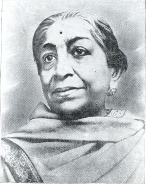

Sarojini Naidu
(13th February 1879 - 2nd March 1949)
- Early Life
- Literary Talent
- Political Awakening
- Activism:
- Leadership
- Advocacy
- Legacy
Born on February 13, 1879, in Hyderabad, India, to a family that prioritized education and literature.
Showed exceptional prowess in poetry, languages, and oratory from a young age.
Inspired by leaders like Mahatma Gandhi, she joined India's struggle for independence.
Participated in movements such as the Salt Satyagraha and the Quit India Movement.
Became the first woman to preside over the Indian National Congress in 1925 and served as its President in 1930.
Strong advocate for women's rights and education, emphasizing their importance in nation-building.
Remembered as a poet, freedom fighter, and champion of women's rights, inspiring generations in India and worldwide.
